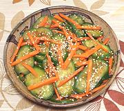

|
Cucumber Carrot SaladCalifornia | ||||
| Makes: Effort: Sched: DoAhead: |
1-1/4 # ** 45 min Yes |
An amazing contrast of textures and flavors. Here on the Pacific Rim, we do not hesitate to use Asian ingredients, "authentically", or not. | |||
|
1 2 5 ----- 1 2 2 1 1 1/3 1/4 ----- |
# t oz --- T T t t t t t --- |
Cucumbers (1) Salt Carrots -- Dressing Oil (2) Rice Vinegar (3) Soy Sauce Sesame Oil, dark Sugar Salt Pepper -- Garnish Toasted Sesame (4) |
Make - (45 min - 25 min work)
|